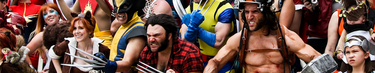
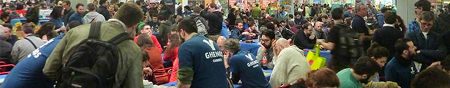
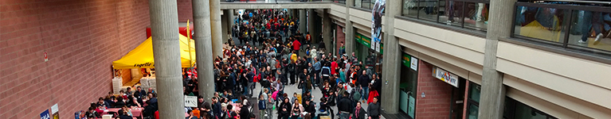

Pronti a partire? Zaino riempito, scelte le scarpe da indossare, panini pronti?
Se avete paura vi sia sfuggito qualcosa, non preoccupatevi, rimediamo subito. Se ritenete di non aver bisogno di ricapitolare… Ricredetevi, qualcosa lo avete dimenticato.
Che siate già venuti a Modena Play, che siate ancora novellini del boardgame, che non sappiate la differenza tra Reverendo Green e Parco della Vittoria, poco importa: noi non facciamo discriminazioni. Ecco qua dunque una piccola guida per non arrivare impreparati per una giornata di fuoco a Modena.
Partiamo dal principio.

“Ma Sofia, vuoi persino dettarmi che mutande mettere?” Direte voi.
No carissimi, sono qui per evitare che i vostri piedi inizino a chiedere pietà dopo poche ore di Modena Play. Come probabilmente saprete, quest’anno la fiera sarà composta da 3 padiglioni, più le sale ai piani superiori. Il tutto supererà i 22000 mq: sicuri di non avere bisogno di un buon paio di scarpe da ginnastica?
Vi consiglio anche di non vestirvi troppo pesanti: a un certo punto potrebbe fare caldino, soprattutto se c’è tanta gente.

Ebbene, grande punto di domanda.
Una cosa che potrà sempre aiutarvi nei momenti di bisogno sarà una bottiglietta d’acqua, immancabile.
Se avete già contrattato con altri giocatori, sapete bene quali giochi portare per i vostri affari, ma soprattutto sapete anche quanto spazio deve rimanere libero nello zaino in attesa di essere riempito da acquisti o scambi. Vale per tutti: non riempite fino all’orlo dieci borse, mantenetevi leggeri. Questo vi sarà utile per eventuali (probabili) acquisti, ma soprattutto per potervi muovere senza un bagaglio da carovana.
Un altro elemento importante da procurarsi potrebbe essere la lista completa delle nuove uscite (potete trovarne una realizzata bene qua) così sarà più facile capire a cosa siete interessati e dove andare a cercarlo, per non vagare nel vuoto senza una meta precisa.
Ricordatevi poi di mettere le mani su una mappa, sempre utile, reperibile ovunque all’interno della fiera (è possibile scaricarla a questo link).

Ecco, il cibo.
Saprete probabilmente che nella fiera, fuori dai padiglioni, si trovano dei banchi che vendono dolci, tigelle e ogni genere di leccornia difficilmente trascurabile. Tuttavia, domate la gola! Soprattutto negli orari di punta saranno pressoché invivibili a causa della ressa di giocatori affamati (state in guardia, e avvicinatevi a vostro rischio e pericolo). Per questo è consigliabile portare un pranzo al sacco, possibilmente leggero. Al di fuori dei padiglioni poi c’è uno spazio all’aria aperta in cui ci si può agevolmente sedere e gustare un attimo di pausa e, soprattutto, il proprio pranzo.
Per finire, un consiglio spassionato: se siete consapevoli di non sapervi trattenere e di essere degli invasati del gioco da tavolo, allora per carità, datevi un budget: mi ringrazierete. Le tentazioni saranno tante, i desideri troppo sfrenati, ma cercate sempre di rimanere sulla retta via e di mantenere una giusta misura, per evitare che da tanto invasati diventiate… troppo invasati.
Felice Modena Play 2018 a tutti!